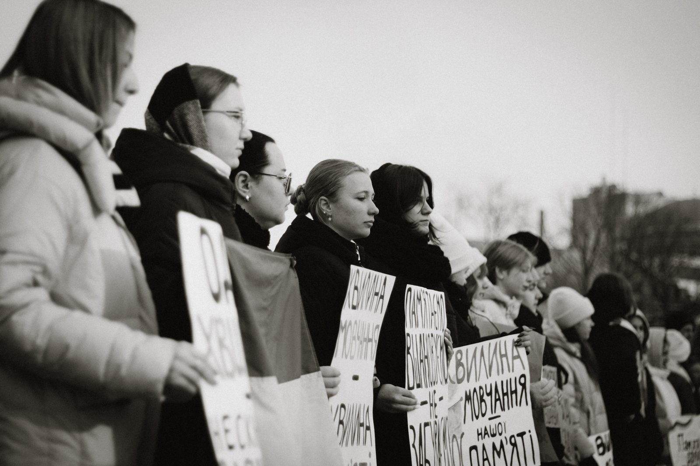

04 — НАПРЯМОК
«Стою за…»
Проєкт персоналізації пам’яті, який повертає кожному полеглому його ім’я, історію та обличчя.

04 — НАПРЯМОК
Проєкт персоналізації пам’яті, який повертає кожному полеглому його ім’я, історію та обличчя.
